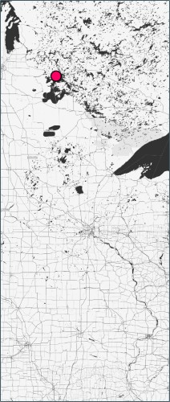
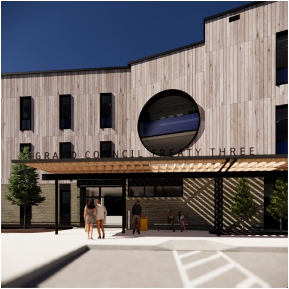
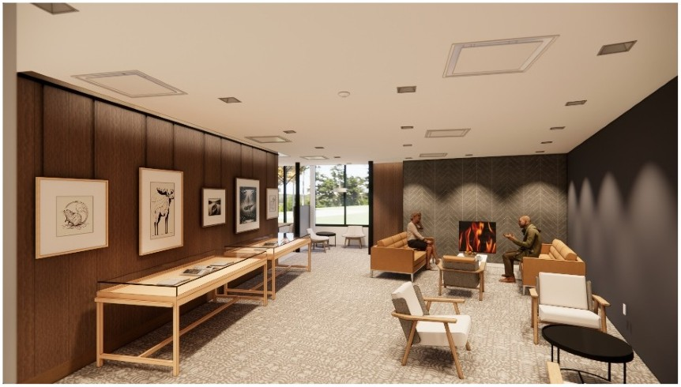
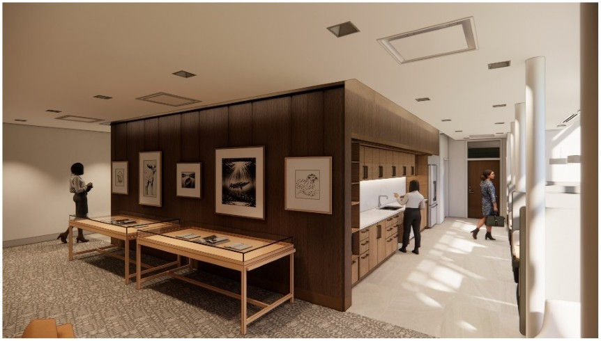
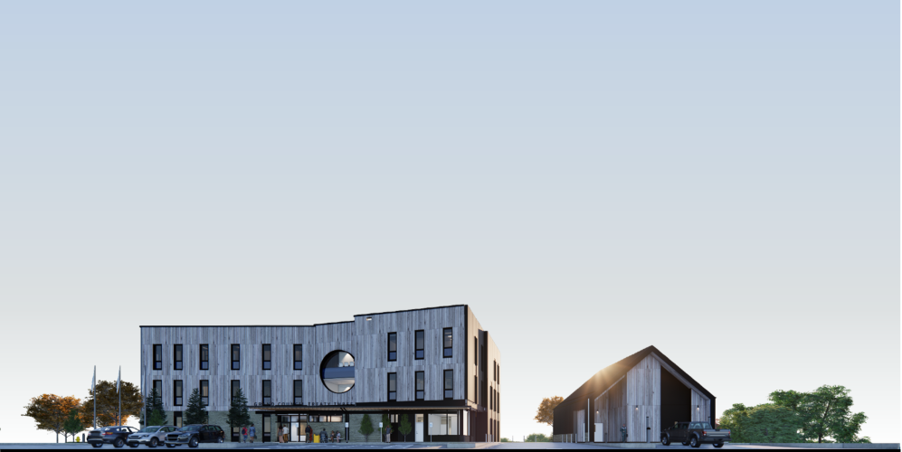
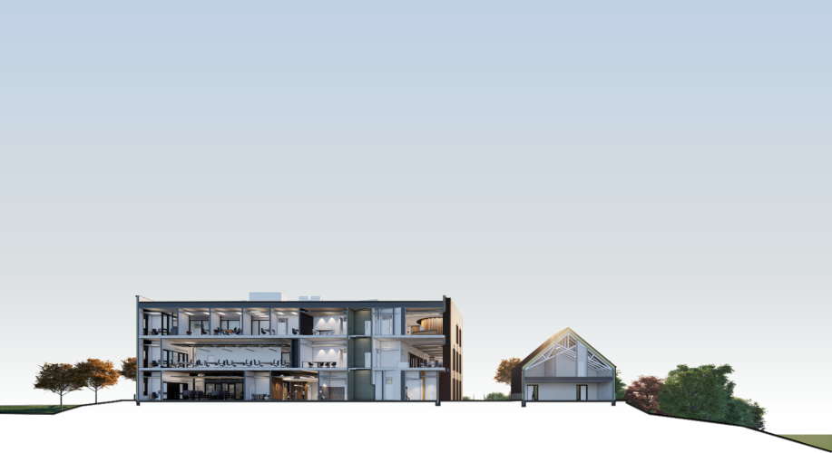

Grand Council Treaty 3 • New Headquarters
Kenora, ON
Situated in Kenora, ON, the site features a dual-building program comprising a main office headquarters and a secondary accessory pavilion. The design strategy maximizes natural light by positioning core functions at the center of the floorplate.
Security is a primary focus, ensuring controlled staff entry and monitored client access. Administrative units follow a logical progression from the ground level to the third floor, with meeting rooms distributed throughout. The top floor is primarily dedicated to the Grand Chief’s meeting room and the Ogichidaa’s suite.
The project comprises two structures: a main office complex and a smaller accessory building for the Territorial Planning Unit’s bulk storage. .
To honor the natural world, both buildings are clad in natural stone and cedar. The window-to-wall ratio was carefully balanced to provide ample natural light while maintaining highly insulated, energy-efficient opaque assemblies. Although not pursuing formal certification, the buildings are designed for high environmental efficiency across all envelope, mechanical, and electrical systems.


Reception
Designed for efficiency and comfort, the reception includes ample workspace for an attendant and a welcoming seating area for guests.
Minimalist wood screens serve as simple visual markers, delineating the reception area without obstructing views.
Inside the Lounge
The versatile floor plan accommodates community art exhibitions and historic artifacts, the latter of which are housed within protective vitrines. For building occupants, a dedicated lounge offers a refined setting with comfortable seating and a fireplace.
Staff Kitchen
A discreetly positioned kitchen and banquette offer a versatile zone for meal prep and socializing. Here, the feature wall integrates directly with the kitchen, dovetailing into a frame that highlights the cabinetry.





Project Info
- Project Name: Two x Four Lofts | Boral Design Competition 2011/2012
- Year Completed: TBC
- Location: Kenora, ON, Canada
- Firm: Brook McIlroy Incorporated
- Position: Project Architect/Manager